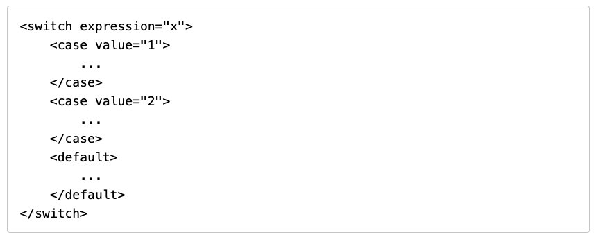
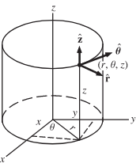
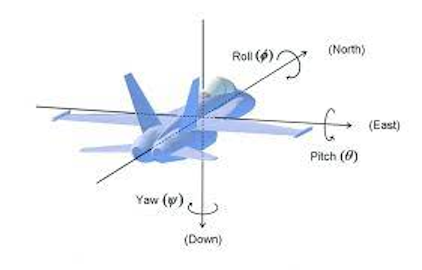
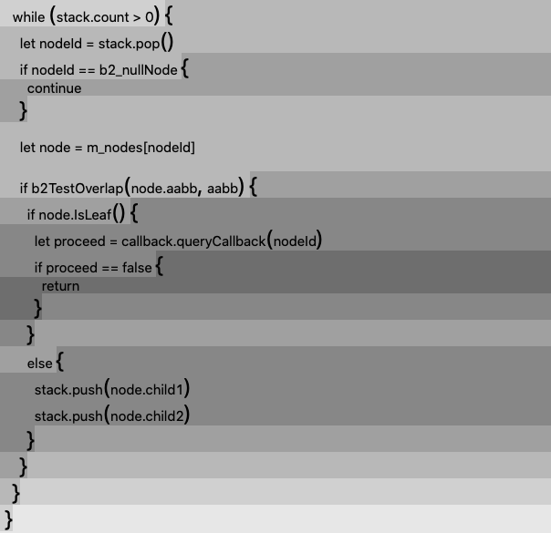

Introduction
Computer code files can be converted from plain text into a modern document format, allowing many features to be provided to programmers that are consistent with the present computing environment. Important to note, this will change the interface dynamic of the code editor. To ensure that the editing of a code document is speedy— as fluid as the editing of plain text code today— a user interface that is different from simple mouse-clicking of onscreen controls is discussed on this page. It will emphasize the keyboard for interface control of code editing and a modified use of the mouse called the key-click UI (demo) by Noctivagous, which is made available for everyone.
Below is an example switch statement converted to XML for a code document file format. Immediately,
all of the interactive capabilities that can be brought to XML are available for a switch statement and
any other statement brought into markup.

The switch statement can
be represented in any way needed and, instead of alphanumeric characters,
can be inserted as a keyword unit.
Many advancements will take place when code it translated into a document format.
The appearance can be customized however preferred— including making the code
behave exactly the way it does today in plain text. Thus, there are no meaningful
disadvantages to taking this path for code.
More specific examples like the switch statement are located
here on dFork,
a tech news website that is part of Noctivagous (January 2023).
Outline:
-
Adopting Markup underneath The Code
Files
- When computer code files are converted into a complete document format, this will
allow computer programming to advance past editing of plain text. A document
file provides more interactivity, it provides layout features, and it is edited by a modern software application.
A text file is the most basic format for an editable file.
- Placing markup underneath what is shown in a code editor will greatly expand the range of capabilities provided to computer code.
- There is no real disadvantage, as the code can be placed into any mode, including the existing plain text editing form, as it is XML rendered any way desired.
- When computer code files are converted into a complete document format, this will
allow computer programming to advance past editing of plain text. A document
file provides more interactivity, it provides layout features, and it is edited by a modern software application.
A text file is the most basic format for an editable file.
-
Interacting with Computer Code with a
Key-Click UI
- This is the first step for interacting
with computer code after markup is added.
- When there is a greater range of capabilities present, a new set of demands on the user interface becomes the issue for a code editor.
- Programmers will expect the same speed of interaction with markup-based code that plain text code provides them today.
-
Redesign.Codes addresses this
with what it calls
the key-click UI. It
is a user interface approach that
uses the keys of a keyboard for clicking. It ignores
the mouse's click buttons completely, but uses the mouse for controlling the cursor.
This provides greater control.
- Keys of a keyboard act as the mouse's click buttons. Try out a demo of the key-click UI here.
- A second emphasis for the code editor is labeling elements
and controls on screen with single-press key labels,
(single-key-labels). A single-key-label means pressing a key, without a modifier,
that accesses a labeled control (tagged with that key).
- The entire layout of the keyboard changes.
- Activating onscreen controls occurs much more frequently with the keyboard than the mouse, but the mouse is used to move elements around with the key-click ui.
-
In a future Redesign.Codes operating system, modifer keys are no longer used as
pressed combinations with other keys. The scheme where they modify the functionality of other keys is to be
discarded. Instead, they are single-press keys that swap out single-key-press
keyboard layouts, with there being three keys available on any keyboard: alt, meta, and control.
There is a keyboard layout for control, one for alt, one for alt + control pressed
together, etc. But they are not pressed with the regular alphanumeric keys.
They are pressed sequentially with other keys. To copy an item, it is a tap of the control key (swaps out keyboard layout),
then a press of the letter k.
- Some changes will occur on this, and it may not be exactly as just described, but modifier keys that have to be held down are consequences of computers before the GUI.
- This is the first step for interacting
with computer code after markup is added.
Full Summary:
All apps downloaded from an app store are made with plain text computer code— whether the device is a smartphone, tablet PC, or desktop computer. To address programming's reliance on plain text, Redesign.Codes explains how software development tools can add a new level of authoring to their editors: they can recognize code files made out of markup. The markup sits underneath what is rendered inside the code editor. When made the foundation of a code document format, markup will greatly improve the state of code, allowing it to become flexible, easily organized, and customizable.
Code can keep all of the existing editing control provided by plain text and then add a breadth of capabilities when it has been given an underlying structure, and this is easily provided by markup. The markup's structure is like the steel framing of an office building, allowing for all varieties of modern interior features to be added, whereas previously the walls were made of flat stones and cement mortar.
Once code is made out of markup, it is then rendered by the editor just like an SVG or web page, to provide two rendered markup examples. A more advanced editor will likely take on a form similar to a page layout document (e.g. Adobe Indesign or QuarkXPress document), but with much faster means of interacting with it.
Once the programming system behaves like an interactive, markup-based document (but tailored for app programming), interacting with it cannot stay completely the same as a plain text editor. That is, new features that are provided by the markup call for an additional approach besides just typing, so Redesign.Codes explains the key-click UI.
The key-click UI is named as such, to begin with, because the clicks of a mouse are moved to the keys of the keyboard, and then because the keyboard has more than three keys it provides many more clicks than the mouse. The keys click, not the mouse buttons. The mouse remains the physical device for moving the onscreen cursor. Doing this redistributes interaction with the computer by placing less of the user's physical activity on the mouse. During conventional dragging, for example, the user has to hold down a mouse button to drag and also coordinate the mouse's position, which is actually overloading the situation. The key-click UI separates these two activities: the mouse moves the cursor while a key-click activates a drag on the object being dragged. A key toggles dragging (a drag-lock), because a drag-lock works with the key-click ui whereas it did not with conventional dragging. "Dragging" thus becomes something very different.
The key-click UI has been applied to software worked on by Noctivagous, the company behind Redesign.Codes, and its benefits are not just talked about here but have been put into an application for vector-drawing. In fact, that is where the key-click UI comes from, this vector-drawing program that is not yet ready for release, but which is far along in its goals.
The name of the software is Floating Marker. You can watch in the video below that the keys are actually taking the role of clicks. The mouse buttons are not being pressed at all, but the mouse is being moved to control the cursor location.
For the task of programming, the key-click UI addresses a major, longstanding obstacle for upgrading computer code: there has always been a conflict between writing code in plain text and programming directly with a graphics-based user interface.
Before the vector-drawing program is made available, the key-click UI can be discussed today, because its applicability to nearly all other types of software became apparent in the course of making the software. There is no reason to hold back on talking about it because once it is made available in the vector-drawing software just mentioned, the world will likely take it up for many other types of software. The key-click UI described on this page has been investigated over the span of years, although it may look simple. If all of computers change for the better because of following the key-click UI of Redesign.Codes, that is a positive outcome because building vector-drawing software takes more than just having been shown the key-click UI. Noctivagous will be able to make software with a much preferable set of technological tools— in a much preferable technological environment— if the whole world adopts the key-click UI for software and code construction.
The mouse has its purposes. But using the keyboard to write code has always been the fastest, and it is currently the only professional user interface available. Programmers don't want to program directly with a conventional GUI for very much of the code because it doesn't handle intricate situations well at all. But with the key-click UI, successfully changing the entire setup for interacting with computer code is now within reach. Intricate code can be made and modified for the first time. The existing speed of computer interaction found in editing plain text code— that programmers rely on— will be available in the more graphical computer code made out of markup.
With a combination of markup and key-click UI, conventional programming languages like C++ can just be transformed inside the code editor using document formats that are much more modernized. Any programming language code file's extension can just have 'm' appended to distinguish its document format status from the plain text file. For .cpp files, .cppm would be recognized by the code editor as C++ code that should be compiled just like a .cpp file, but from a document format. It can then be converted to .cpp from the .cppm.
Instead of reusing the old programming languages, it is also the case that a completely new system can be built from the ground up using toolchain technologies. Therefore, no slow-down of the final, compiled product has to happen, which is another concern computer scientists bring up when discussing the addition of interactive or styled layers to code. It is not about adding a higher level of abstraction and thus providing a "no code" or "low code" situation. Instead, it is about upgrading the document format that represents what computer code is about in the editor.
What is described on this page, which is translation of plain text code files into a document format, can serve as:
- a means of converting existing programming languages to a more graphical and interactive form.
- making a new programming system from scratch that offers complex features found only in a document.
- making a code editor for a custom, markup-based programming language that "transpiles" (or is converted) to an existing plain text programming or scripting language.
Once freed from the plain text format, programming with a document format moves towards a systematic setup, because all aspects normally considered external to the code files (e.g. GUI, images, etc.) that could not be shown in the plain text files are integratable into the code documents.
To give an example, the thumbnail of a GUI window may be located inside the code document, placed right next to the code that references it. Clicking on it can just enlarge it for editing inside the document. When software development tools make use of documents, programming the more complex situations of today will be faster and code will be much more manageable.
Key-Click UI: The Use of Keyboard Keys for Mouse Clicks
Clicks on The Mouse Are Moved to The Keyboard
There are usually three buttons provided on a standard mouse: right click, left click, and middle click (by pressing the scroll wheel). On a keyboard, there are more than a dozen keys. If the programmer makes the keyboard key peform the mouse click— in place of the mouse's click button— he or she will gain a lot of user interface control in the software. The objective of the key-click ui is to leave the mouse buttons alone when making the software and work up interaction around different types of keyboard clicks. Put differently, when the keys are used to click it makes the interactivity feel mechanical, unlike the existing setup.
It gets to be that there is a desire to change even the user interface controls on the screen to avoid using the mouse click buttons. This is a comprehensive strategy, applied to the whole computer user interface. The mouse buttons are not used except to accommodate the times when people press them out of habit.
The First Convention of Key-Click UI
The first convention for this explained by Redesign.Codes, considered the first staple, is the following. It is a configuration tested for vector-drawing software.
-
select a draggable object with the tab key.
- The tab key performs what is currently shift + left mouse click.
- lock it to the cursor with the spacebar key.
- wherever the cursor goes, the object goes because it is locked relative to the cursor's location.
- unlock it from the cursor when the user presses spacebar key again.
When the object's location is locked relative to the cursor, the programmer can operate with it by implementing other keys in the software. Since it's locked to the cursor, it moves wherever the cursor goes. Then the programmer is able to stamp it on the page with the V key (as an example key near the home row). It is possible to scale it with the bracket keys ( [ and ] ). It is possible to rotate it with the semicolon and single quote keys ( ; and ' ) that sit underneath the bracket keys. This is a tested keyboard configuration.
So that multiple objects can be selected, the tab key implements what is currently shift + left mouse click. This allows the tab key to deselect, too. Just like before, it's possible to deselect individual objects one at a time or deselect everything by tab-clicking in a blank space. Making selections with the selection rectangle is discussed in the section below because it is converted to the key-click ui.
Applying the Key-Click UI to an Online Map
Expanding the number of available clicks to what is on a set of keyboard keys can make the software more straightforward to use because it reduces the number of times that an additional menu of functions has to be displayed.
For example, in the case of an online map, the spacebar can act as the drag lock/unlock key for panning the entire map right away, with pressing it a second time unlocking the map from the cursor. This is much better than dragging the map while holding down a mouse button.
Online map websites aren't sure what you want with a mouse click or what you want to do with the location you are going to click on, so they open up an information panel and provide a menu of functions. This is slow, comparatively. With the key-click UI, different key-clicks are mapped to those functions ahead of time and an onscreen keyboard is always showing them. One key can just center the map. Another key-click can open up the street view of the location underneath the cursor. The one next to it can add the address to a list, for collecting addresses of locations to visit. Different keys can be designated to do different things, as there can be a dedicated map marker key that just lays down markers when it is clicked.
How do you collect items (locations, objects, coins, etc.) found on an online map and put them into a bin? You designate a specific key for this purpose and each item clicked on the map with the key is placed into a bin. Sorting of items is now possible with the key-click UI, because at some point four or five keys can be designated to put items in four or five separate bins. The number pad is talked about in a section later, but actually it can be used for sorting items into 9 or more separate, predefined bins because each individual key's click places the object underneath the cursor into its own bin.
As an additional comment, the web could also be organized this way in a custom urban planning format, as all there is presented to the person is a blank page, a list of bookmarked links, or a search engine box. The web is there and it ought to be accessible in more ways than that since so much societal effort is put into it, after all. Different sections of the urban map or navigable environment sort different aspects of the web. But the representation does not have to look completely like a city. It can sit somewhere between a tree map kind of representation and a city environment. There is at least then an overview of what this web contains, not just looking at a single website at a time.
Operating on an object Immediately without requiring a selection (or a drag lock)
As mentioned, the bracket keys are used to increase and decrease scale of an object, but it can be the case that they do this immediately to the object underneath the cursor. This is the other option: to operate on objects underneath the cursor without requiring that a selection be established first. This is also true for the delete key: it can be the case that it deletes what is underneath the cursor right away.
It depends on the software which configuration works optimally. It can depend on preference as well. It's also the case that the two modes can be offered and through a keyboard key a person can switch between them.
The Second Staple: The Selection Rectangle Is Established by the Rectangle's Interior Hypotenuse (using Two Key-Clicks)
The selection rectangle has the same appearance as the one in use today, that it sits at 90 degrees, but it is converted to the key-click UI by establishing two points with two key-clicks.
- key-click S establishes the first corner of the rectangle (point A).
- Point A is fixed. As the mouse moves around, the line extending from point A to the cursor
(point B) is used
to make a rectangle. It is the interior hypotenuse. As the mouse moves,
the rectangle is updated (and the selection underneath usually updates as well).
- Just like before, there are four quadrants the rectangle can sit in.
- The second key-click S finalizes the selection underneath the rectangle and the rectangle disappears.
Once there is a selection, it can be deleted as usual by pressing the delete key. But if the delete key is pressed to establish point B instead of S a second time, it can delete the contents selected by the rectangle right then (instead of just finalizing a selection).
The selection rectangle also allows making a cropping rectangle for an instant zoom into a section of a map. It can also be configured to do a compound action of any other sort, such as selecting and copying, at the same time, any cluster of points that sit inside the rectangle. Multiple selection rectangles can exist that perform different types of functions, and they can be assigned separate keys that sit next to each other.
Selection Lines
A rectangle is one type of selection, but anything that overlaps with a line can be made part of a selection. The first type is just a single line, but there can be selection lines with multiple segments (also called a polyline), as long as the mode is continued.
For apps made by Redesign.Codes, modes begun with key-click are finalized with the END ( A ) key or they are cancelled with the ESC key. Alternatively, and depending on the software, a mode can be finalized with the same key that started it if there are only two key presses.
The Third Staple Convention: The Key-Click Drag-Line Replaces Holding Down the Mouse Button for Drag-and-Drop
The way it currently is with drag-and-drop, the mouse's click button is held down until the drop of the object onto the destination.
For keyclick UI, a key is not held down to drag and drop. It is pressed twice: the first key-click establishes what is to be dragged directly (underneath the cursor) after the cursor has been placed over it. When the mouse moves after that, the screen draws a vector line from the drag source to the cursor as it moves until the second press of the key.
- Key-click 1, D , establishes what will be dragged. It is point A of the drag line.
- As the mouse moves around and toward the drag destination, a line is updated from point A to the cursor (point B).
- Key-click 2, D , establishes where the dragged object goes (and it then goes there).
Copying files instead of moving them is usually accomplished with the right click (or a modifier key is held down as the dragging takes place). Instead, on step 2 the copy key F can be pressed in place of the same key ( D ).
This situation allows extending the copy function to copy to multiple locations, because if the E key is used on step 2 this would allow hitting to multiple drag destinations (for copying) until the END key A or ESC is pressed.
Example: a nozzle tool
To make a real-time nozzle tool that adds and subtracts particles, you can just designate a pair of keys like N and M to do that, and the cursor as it moves around can deposit particles underneath a circle brush. J and K might be the keys that thicken or thin the particles that you deposited. U and I can darken and lighten what was deposited. The location of these key pairs on the keyboard turns the computer into something like a real machine. The key-click ui allows for a real-time particle nozzle machine, in software.
Available Convention: The Key-UI Glove Cursor
The cursor is just an arrow. But actually, because of key-click ui, it can be made large and display 8 keyboard keys that correspond to 8 different key-clicks:
The rounded, gray rectangle is a big cursor. So, it is a "glove" of clicking keys standing in place of the arrow cursor. As it moves around, it has various functions according to what is shown on the keys. Because what is shown can be programmed, many scenarios are opened for software.
Optionally it can be left at 4 key-click UI keys:
It can also be made a full numberpad.
| 7 | 8 | 9 |
| 4 | 5 | 6 |
| 1 | 2 | 3 |
| 0 | . | |
Key-click UI makes this a glove for a real-time machine. Each key can be given a specific role for the software it is used for. For example, the bottom row can made of clamps that pick up items, so there are four available places for items to be stored, moved, and dropped.
- keys in the glove can serve as mechanisms, such as one that holds an object and can rotate it in its holder
- keys in the glove can just operate on what is beneath them
- other keys on the keyboard, that are not part of the key-glove cursor, can be made to control and configure the glove, including swap out functions , expand the layout spacing between keys, or even rotate the glove itself.
Other keys can just be operations that operate on objects underneath them.
In a numberpad based key-click glove, the keys can serve as 2D translation (XY) keys:
- 5 draws the object toward press number pad 5
- The other keys push away the object corresponding to their location. To translate the object to the right, press number pad 6.
In a numberpad based key-click glove, the keys can serve as 3D spatial translation (XYZ) keys:
- 5 pushes the object away from the viewer. 0 reverses.
- The other keys push away the object corresponding to their location. To translate the object to the right, press number pad 6.
Implementing The Key-Click UI For Editing Code or For Any App
The key-click UI is flexible for making app interactivity: as the cursor moves around the document, it might not be stamping of a vector-graphics object that you do but instead insertion of a programming container into an area. What is helpful is that you can insert all kinds of programming containers using a single keyboard layout. If you want more than what is available on that keyboard layout, you can swap out different configurations. They are arrangements of key-clicks that you are swapping out.
For today's computers, until a modifier like control or alt is pressed, keyboard keys primarily serve to enter alphanumeric characters, with the most frequent occurrence being text fields, multi-line text or single line.
This situation is inverted when the key-click UI is active: a plain key, without a modifer, performs an operation or function, and just like with stamping it pertains to where the cursor is located. Every key performs its own kind of click.
Whenever you change the layout of the keyboard, you have a new layout of commands because each key is a command and not an alphanumeric key for entering text. This is the main way a code editor can come about through key-click UI, because a lot of code can be inserted and edited in a mechanical kind of way. The keyboard is assisting in being a layout machine, with real-time operations that modify or add to what is underneath the cursor.
For inserting new computer code, when the keyboard layout is loaded, each key
deposits a code element in the page. By just pressing the I key you can
insert an integer variable, and with U you can insert a floating point variable.
You can insert if statements and loops right away and define them much more quickly
after
they are in the page because you have the key-click ui to do that too.
This website says that an onscreen, live keyboard makes it so that the user of the software doesn't have to memorize every key of a keyboard layout because it is shown. Eventually the user does not have to look at the onscreen keyboard very often.
On the loaded keyboard layout for insertion of code elements:
S inserts a string
variable, F can place a function in the code,
G adds a for loop,
W inserts an if statement and E inserts if-else.
T adds an else-if area. Y adds a switch-case.
After a variable or statement is inserted into the code (as if int
had just been typed), it has to be edited. Because it is being inserted,
it starts out with an automatically-generated name.
To edit the name of a variable after it is inserted,
all text fields are editable on hover. Redesign.Codes
does not favor clicking inside small text boxes to activate editing,
and it instead promotes "edit on hover" like below.
| int | = | ; |
The benefits of moving away from mouse clicks extends to all user interface controls: if a text field is for numeric values, just press the bracket keys while the cursor hovers over it in order to increment or decrement the value. (This aspect of the numeric field is not yet implemented above, but it is in the software Redesign.Codes is working on.) You can do that for slider controls too, either circular or linear. Just hover over the slider and it moves when you press a bracket key. If you tab-click a specific location in the slider, it goes there right away and this is better than clicking with the mouse.
For the thickness of a selected vector line, - and + are used, and they sit above the bracket keys.
Clicking and dragging objects with the hand fatigues the hand by comparison, and after clicks and dragging are moved off the mouse and placed onto the keyboard, a person will not feel that holding down buttons on a mouse or trackpad are nearly as good as the key-click UI. The person will wish that all websites, operating systems, and software implemented this approach. And fortunately it is compatible with all computers in use today. It just has to be implemented in software.
Setting up clicks to exist as various keys on the keyboard in place of mouse buttons provides a leap in UI handling and control for the user of the computer (handling as in how a car's controls make the car handle curves as it moves around a road). And when an entire keyboard of keys acts as a set of separate clicks, this expands the range of real-time operations available at any period. Software takes on the form of machine interactions, which is more conducive to fluid interactions with the computer by many times.
Using the click on the mouse will happen, though, because it is the habit promoted by all computers everywhere. When you do end up hitting a mouse button on your own, it will be accommodated by Redesign.Codes.
In a Key-Click UI, The Utility of the Keyboard Is Not Limited to clicking
The keyboard is powerful, which is why so many people use the command line, because entering a command in the command line it breaks out of any slowdown or nonsense that came about suddenly in a GUI.
What can continue across the system is not only clicking with keys but another situation which is leaving the mouse stationary. In this case, the software application is programmed for dynamic interaction with the keyboard based on what is happening inside the active software application.
Anything that would have been clicked has a label affixed to it for which key will activate it, and these labels may change according to the states of the app or what its documents are doing. No software does this, but it resolves a longstanding tension between GUI and keyboard shortcut control of a computer.
For example, it is the view of Redesign.Codes that a better web browser can exist that does not make a person move the mouse or click on the page. In this web browser, a computer user does not have to move the mouse to click a specific link.
There are multiple ways to do this, but the numberpad overlay grid is discussed below.
Using the Key-Click UI to Activate Individual Cells in Rows of Tabular Data
- Hover the cursor over a row (of a table of data).
- Each cell of the row, starting from left, is labeled with a key from the keyboard that activates it.
- These labels are the same for each row when mouse has hovered over it.
-
A viewer box can be placed to the right of the table, and when
a cell is activated it loads its associated data into the viewer box. This allows for
rapidly going through media, including photos, text, 3d models, and movies.
It could be names of the media or thumbnail previews.
- The table can be longer than the height of the view but then it needs to have scrollbars so that the viewer stays in place. Alternatively, it can be paginated into sections that are mapped to the regular number keys.
-
The key-click UI is flexible because what is done to the cells can
be changed.
- Activating a cell can append its contents to another area (a clipboard-like area) instead of view its associated data in a viewer.
- More than one key label can sit underneath each cell, and the keys can activate different functions on the data.
The Number Pad-Based Interactive Grid
For either file navigation or browsing a page of hyperlinks, the number pad (also called "numpad") is a GUI user interface requiring no mouse movement, just keyboard interaction. It has relevance to browsing files on the file system or accessing data trees. On a web page, it allows speedy navigation to hyperlinks regardless of where they are located on the page; the web page does not have to have been designed in tandem with this navigation scheme.
Web Browser Navigation Based on the Number pad and Its Overlay Grid
When Redesign.Codes applies the numberpad interactive grid, there are 9 divisions made of the viewport of a web browser. They correspond to the 9 keys on the numpad. This is the overlayed 3x3 grid.
- As the person browses a web page, the numpad grid overlay is usually hidden. Optionally, its intersection markers can be present.
- Pressing any number pad key makes the overlay grid visible and it is labeled with numbers of the number pad. .
- The viewport of the web browser is then divided into 9 cells with the overlay grid. It is then possible to access a desired hyperlink because it is sitting in one or more of the 9 cells.
- Pressing the number pad key corresponding to the grid cell where the hyperlink is located will activate that cell by placing letters over each hyperlink , starting with ASDF, then QWERTY, then ZXCV, all the way across the keyboard.
- Pressing the letter on the keyboard corresponding to the link activates the link and the overlay grid disappears or returns to just being intersection markers.
In a mode that is not activating hyperlinks, this is also a means of accessing and making use of non-hyperlinked elements on the page without having to move the mouse or clicking the elements. If a web page element is accessed, it can be immediately placed into a custom clipboard with a different keystroke . It can also be zoomed in on because it has been accessed.
In the above description, the viewport is divided once with the 9 cell grid and then alphanumeric labels are generated for the hyperlinks inside an activated cell. But in an alternative navigation scheme for other scenarios (besides web browsing), the activated cell is subdivided with a new 9 cell grid.
For many users making use of a web browser, interaction with tabs is a frequent activity. So the other keys on the number pad can be made to move between tabs. Also, what's called the "target" of the hyperlink, whether to open it in a new tab or in the current window, can be changed with the other keys on the number pad. Usually it is a modifier key on the keyboard pressed at the time of a mouse click that changes the "target" of the loaded hyperlink.
In a web browser, Redesign.Codes expects the zero key to be used for changing (toggling) the number pad key layout, turning it into controls for interactive elements on the web page, particularly controls for videos. When it is used for interactivity, the period . key can be used as escape while the enter key can be used for OK.
Importantly, a person while web browsing does not have a feeling for how much is on the page, or how long the web page is, and a version of this can be used for accessing A4 or letter thumbnails of the web page.
Numberpad Websurfer
Redesign.Codes is providing a Chrome extension that demonstrates the use of a interactive numberpad grid, in this case for web browsing. It is called Numberpad Websurfer.
- Numberpad Websurfer lets the user hit links or enter text fields.
- It shows that the back and forward buttons should be single press keys (without any modifiers).
- Modifier connotes "extra". But back and forward are commonly pressed, so they should be keys.
- Requiring a modifier key for frequently accessed commands produces a high level of interface friction.
- When the back and forward buttons are single press keys, the computer behaves more normally.
- This is also the case for tabs, that moving between them should involve dedicated keys without modifiers.
In the case of Numberpad Websurfer, what is tagged onscreen are links and clickable page elments. But if an onscreen element has one tag for clicking links it could have another for executing an operation on it. If the interactive grid were applied to the entire computer screen, for example, one tag (key label) applied to the window would make it active while another would close it. If the interactive grid were used for file navigation, one could open it while another moves it to the trash.
There is another scenario in which underneath the cursor and affixed to its location is very large roaming semi-transparent selector, about 400px by 400px, and the key-label tags are updated in real-time as the cursor moves. In the case there are about 9 or fewer elements underneath the cursor, the cursor is moved and the numberpad keys are used to click. The zero key could be used in this scenario. Numberpad plus and minus can operate on what is underneath the roaming sem-transparent square as well, such as scrolling down and up. This will allow navigating through file systems quickly. Or it will allow operating on displayed data. It may be applied to photo editing.
The numberpad makes it possible to navigate tree maps (diagrams) without moving the mouse or clicking with it. If a numberpad grid is overlayed, or placed on top of, a tree map, it can access any part of the information. Other types of diagrams can have a numberpad overlayed as well. This then makes it possible to navigate these types of diagrams live, in real time, as opposed to just clicking.
Select an element inside a software application or on a web page to apply it to, such as a geographic map on a website page that was not designed for it. If the software that provides this grid can be programmed with macros, a lot of software can be made much more natural to navigate and traverse.
In a plain click-based numberpad grid, the objective is to center the click in the middle of the activated cell as the subdivisions are navigated, until the enter key is finally pressed. That's because clicks require different levels of accuracy, depending on whether it is an image being clicked or a button, hyperlink, etc.
A Three-Part Configuration for a Number Pad
The numberpad allows for many layout configurations in the following 3-part setup:
- An onscreen number pad (a resizable panel window).
- The regular row of number keys changing what the number pad does (determining which layout is loaded).
- The onscreen number pad changing according to which layout was loaded from the regular row of number keys.
For an app, there are then 10 possible use cases for the number pad's 9 keys and the user only has to press a regular number key (or, in some cases, a regular number key in combination with a modifier key if the regular number keys need to be used for text).
Operating systems are usually displaying the applications in a single row, but if there are only 9 open, the number pad can act as the "dock" or "task bar" because just pressing a key corresponding to the application image will open it. In the case there are more than 9 open, the grid can be subdivided, with more than one application image sitting in a single grid cell.
Furthermore, the regular number keys can, after an application is activated, open up a window from that software because the windows are labeled with numbers.
Labeling Windows with Numbers for the Numberpad
Although it is not done, all windows on screen could be provided numbers as labels in their titlebars, and by entering a number on the number pad key that specific one could be made the active window.
To activate the window manipulation mode, just by pressing the asterisk in the upper righthand corner of the number pad, the number pad can be made to manipulate all windows on screen, accepting entry of the number corresponding to the window. The number pad's layout also is evenly divided into 9 sections like how a person would want to position (or resize) windows.Once made the active window by pressing a numberpad key, a drag-lock can be applied or functions that resize or move the window. In particular, at the current time Redesign.Codes is investigating collapsing windows into vertical strips. That is the window is, instead of being collapsed into its title bar (like has been done in a certain OS years ago), it is collapsed into a vertical bar that is the same height as the window or a standard height. The title of the window would of course be displayed vertically inside the strip. This then allows stacking multiple vertical strips on the left of the screen and even moving onscreen windows to the right. Because they are vertical bars, they can be grouped as well and have a single label indicated which software application they belong to on screen.
It is also the case that modifier keys like shift and control can be applied to the number pad:
- When the number pad is the means of accessing or activating the 9-cell regions of a viewport:
- shift + number can activate multiple regions of the grid corresponding to the number pad. It can be followed by the enter key.
Using the Numberpad for Video Games
Jumping away from antagonists
If character is a block, the block is immediately transported to the center of the pressed grid cell, to get away from chasing antagonists. Smaller movements are done with the arrow keys in tandem. If the next numberpad key the pressed is done within 1 to 2 seconds, it is the subgrid of that cell. In a different setup, the arrow keys refine which subgrid cell the block goes to once it is inside the grid cell. But the arrow keys allow moving the block over the cells.
If controlling an object in 3D:
The 5 key moves an object or the 3D scene's main camera away from the viewer.
The 0 key moves an object or the 3D scene's main camera away toward the viewer.
The regular keys serve as functions for the main object(s) of the protagonist, such as the ship.
The keys around the numberpad 5 key act as directional keys, as force on the main objects.
Substituting the Regular Number Keys for The Numberpad (For Laptops and Reduced-Size Desktop Keyboards)
The numberpad keys are in a normal grid and for this they match different areas of an onscreen rectangle that would be accessed. But since the rows of the regular keyboard keys are offset, one after another, using a group of them as substitute numberpad keys does not work well for the interactive purposes described above.
Instead, the onscreen subdivision can take place
U I O P
J L L ;
Numberpad Used for Adding in a Direction
The arrow keys are considered "directional" in that they moved the object a certain direction. They move a selected item. They don't add anything to the page.
The numberpad key can add objects to the page, in the direction that the number pad key represents. It can add squares in that direction.
If it is used for moving an object, it can move it directly into the position of a rectangle.
- manual sorting:
- The object to be sorted sits in the middle
(where the 5 is) of an onscreen numberpad.
Nine positions are allowed for sorting.
- 8 folders surround the middle.
Roaming Numberpad Frame on a Larger View of Cells
The numberpad grid can be a roaming frame on a large table of cells. The table can be divided into sections so that the numberpad frame can be translated by more than one cell per increment. The arrow keys can increment by one cell.
Eventual Moving Away from Clicking on Controls
In the 1980s when the GUI was new, clicking buttons and menus was interesting to everyone. But actually, there is too much work required to click a window's close button because it is small. Redesign.Codes has found that after the implementation of key-click UI in software, there is a trend that emerges where eventually it seems preferable to avoid clicking buttons and controls. It seems instead that they should be labeled with keys, accessed with those keys, and then manipulated with other keys. That's also true for controls like sliders.
-
The key-click UI is used for manipulating objects in the page that
need to be deposited, manipulated, scaled, operated on in real-time. It is manipulating
objects during production of an end-product.
- It can also be used to click on controls of the software.
- Controls like sliders seem as though they should be accessed and controlled by the keyboard (or other device), with the system generating key labels all the time for every onscreen control.
In today's computer systems, all objects on screen are clicked, regardless of whether they are controls for the software or objects that are part of an end-product during production.
For navigating to controls, moving the mouse followed by key-clicking does not need to occur. Instead, elements onscreen like text areas and buttons can be labeled.
All hyperlinks on a web page are actually buttons and "browsing the web" involves clicking lots of buttons that are perceived as merely underlined text. If a person thought they were all buttons, the computer user would look at "browsing the web" very differently.
This navigational technique then applies to editing code because programming, too, does not have to always involve constant movement of the mouse. There are times when the code editor can label elements in the page of code so that highlighting a desired area (for editing) is immediate. A combination of both is helpful because with code it is about manipulating code elements, but when browsing the web it is about navigation through the information.
- A web browser is usually about navigation of information.
- So less mouse movement would be desired.
- A code editor is usually about manipulation of code elements
and navigation to them.
- So a combination of mouse movement and periods when the mouse is used less would be desired.
Summary of Key-Click UI:
-
1. KEY CLICK IN PLACE OF THE MOUSE CLICK
-
Redesign.Codes moves the click off the mouse, assigning it to keyboard key(s) instead. This allows for a very different, expansive dynamic to come about. (The mouse serves only to move the cursor.)
-
When a computer stops making the mouse hand do two things at same time (coordinate the cursor and make clicks on the mouse device), dexterity of computer interaction is greatly improved. The increment fatigue that occurs from clicking is relieved from the user's right hand (for right-handed users). The left hand manages clicks, on the keyboard. The two hands then work together in separate locations to achieve goals quickly, reminiscent of operating a sewing machine (the sewing speed is controlled by the foot on a pedal and the stitching is maneuvered by the hands, an example of better machine interaction from the body).
-
A new setup that the computer industry has not seen comes into software this way. In a vector-drawing application, it allows for an immersive, machine drawing environment. (But a vector-drawing program has to take care of a myriad of details to make that amount to a complete package of software, because it goes beyond changing the mouse click to keyboard key clicks.)
-
A typical mouse is limited to only three click types (left, middle, right). When the keyboard keys replace what the mouse buttons do, there are dozens of available clicks (any key on the keyboard), not just three. And, they can do different things that work together.
-
To select an individual object, you press the tab key, and it is selected immediately. The tab key selects and de-selects (because it is the selection click).
-
Various keys can activate interactive modes, in wich a certain key begins the process of generation of an object in the app. After a certain number of steps are taken, the sequence is finalized.
-
All of these interactive modes are finalized with END (the A key) or exited with ESCAPE (the ESC key).
-
A computer user's left pinky finger is always resting on the A key, and ESC is easy to hit because it is located at the upper lefthand corner of the keyboard. Q is also close to the A key and ESC, allowing for undoing something in the middle of the sequence. So, either finishing or escaping an action can be done naturally. This keeps interactive movement flowing.
-
-
-
-
-
2. CARTING INSTEAD OF DRAGGING
-
To drag an object, you press the spacebar key after the object has been selected (using tab click), and the object moves in lock step with the cursor. In other words, this is a drag lock, affixing objects to the cursor. To release the drag lock, press the spacebar key again and the object is dropped where it is. This is called "carting" by Redesign.Codes. (It is named as such because a cart moves its contents quickly using wheels on the ground whereas dragging something on the ground is very sluggish.)
-
To recap: CARTING is pressing a keyboard key (the spacebar) that locks the underlying object to the cursor's location. Moving the cursor then moves the object onscreen. Releasing the object happens by pressing the spacebar again. Then pick up another object, drop it, and so on.
-
The mouse then does one job well, coordination of movement of the drag-locked objects, while the other hand can do its job well to pick up and drop objects (determining when to release the object or what else to do with them using other keyboard keys).
-
When an object or set of objects is locked to the cursor, it is in the carting mode, or put differently, it is being carted.
-
OVERLAP OF FUNCTIONALITY
-
Take picking up and dropping shapes. When the shapes are selected and drag-locked (being carted) stamp, rotate, scale, and more are available. An object can be stamped quickly at different angles this way during the carting, just to give one example, then dropped back onto the page.
-
In summary, the object is locked to the cursor, the mouse moves it around, and other keys like stamp let you stamp it wherever you want and other keys let you scale it or rotate it as you stamp it.
-
-
3. ESTABLISHING FRICTIONLESS INTERACTIVE PATHWAYS
-
If a software task feels like it lightly scratches you as you try to go about doing it, or there is friction in the transition between tasks, the app has to be examined in those areas. Nicks happen in the transition points and they can happen in the tasks themselves.
-
-
REVISIONS AND TESTING OUT THE APP ON REAL WORLD SCENARIOS FOR FRICTIONLESS INTERACTIVITY
-
A basic reference test: how fast can Floating Marker let you draw any corporate logo accurately, without making you feel the pain associated with using a desktop computer? And without leaving the logo in a state where it needs continous tweaking?
-
Redesign.Codes is looking for these kinds of reference tests.
-
-
Cylindrical Coordinates for Positioning of 3D Models
Cylindrical coordinates take the form of (radius, ϴ, z), compared to the Cartesian (X, Y, Z).
|  |
Increment/Decrement Keys : [ ] - radius ; ' - ϴ . / - z |
Using the key-click UI, cylindrical coordinates are a much better way to handle the initial positioning of a 3D model in a 3D space manipulated on a desktop computer with keyboard.
As is common, the modifier key shift increases the increment unit, alt decreases the increment unit.
These keys work when there is a selection in the 3D space.
The key-click UI also applies to rotation (in the spherical coordinates). For yaw, roll, pitch, the cursor can operate in increments immediately on the object beneath it or it can act on a selection.
| pitch and roll: 7 |
pitch: 8 |
pitch and roll: 9 |
| roll: 4 |
5 | roll: 6 |
| pitch and roll: 1 |
pitch: 2 |
pitch and roll: 3 |
| yaw 0 |
yaw: . |
|
Reducing the Number of Confirmation Dialog Boxes
For a future operating system, one goal of Redesign.Codes is to make it so that there are seldom any dialog boxes prompting for confirmation about what the user just instructed the computer to do. It is also a goal to eliminate the use of popovers and warnings that inform the user about how an action taken in the software will affect something, what a user interface control does, or where something is located.
Generally, the approach involves mirroring how a real-world action does not require dialog boxes. For example, when a plate is put in the dishwasher from the sink, there are multiple steps: the plate is lifted, the dishwasher door is opened, and then the plate is put inside the dishwasher. Finally, the dishwasher door is closed.
In a computer, it would be a button that immediately transports the plate from the sink to the interior of the dishwasher, which might be too much all at once, like how deleting a selected file from the filesystem with one press of backspace would be too drastic. The solution provided in the 1980s when the GUI came out was to ask the user if pressing backspace really was what he or she wanted, just after the user pressed it. On a future operating system provided by Redesign.Codes, there are few such dialog boxes. What you do for confirmation is press four different keys on the keyboard:
- To close a document window without saving the document, activate the
caps lock
and press ] , \ , ] , \ .
The application then closes the document window without writing the file to disk.
- This sequence is listed in the application's menu (assuming that there is still a menu like today).
-
While using a software application,
- Trivial objects can be deleted just by pressing the backspace key when the cursor is placed over the object.
-
For any element or object in the document classified as complex,
the cursor requires three presses of backspace key
to delete what is underneath the cursor.
- This is also a configurable setting, should the user wish to delete on one key press.
For a transitional phase, for today's operating systems and software, Redesign.Codes suggests the use of a confirm button that, when it is key-clicked, requires multiple clicks to activate. Usually, all buttons are clicked just one time. If the action's consequences are large, a confirmation dialog box is shown. But for a confirm button, in response to receiving multiple clicks, the action is just taken right away and there is no dialog box ever shown.
A situation that applies, in Google Chrome if the user attempts to remove an installed extension by clicking the "remove" button once, Google Chrome asks for confirmation whether the user wants to remove it. It could instead use a confirm button.
- While hovering over
a confirm-button (e.g. "Remove"), key-clicking twice with
the return key prevents a dialog box from appearing that asks for confirmation.
- The button indicates by appearance that it is a confirm-button, that it is the type of
button
that requires multiple key-clicks.
- The button will darken each time it is key-clicked.
- It has a 5px border on the right margin indicating that it is a confirm-button.
- The button indicates by appearance that it is a confirm-button, that it is the type of
button
that requires multiple key-clicks.
In a small kind of way, the computer is second-guessing the user when it asks whether the unsaved file should be discarded or the trash can should be emptied. The user tries to empty the trash, but then is asked if he or she wants to empty the trash. The goal of these dialog boxes is to prevent glitches from happening, as in the case where the user did not really mean to empty it but the consequences become something big and drastic.
Making the user's actions more physical will assist this situation. The caps lock is a very physical key.
- To empty the trash, select the trash can symbol once, activate the caps lock , and press the delete key twice.
No dialog box has to be shown that asks whether the trash can actually should be emptied.
In some cases, the trash can is not preferred because no intermediate location for the files is
desired.
A lot of computer professionals prefer the command line because it deletes right away with the
rm command.
But a person has to be careful with that command.
-
To delete a selected file on the system (not put it in the trash can), activate the caps lock,
then press the delete key three times.
- With each delete key press it turns darker or more red.
This way, no dialog box is needed for that file to be removed from the file system.
To confirm some action on a website, the following sequence can be provided
Enhancing the File System, Avoiding Navigating the File System While Saving Files
-Redesign.Codes also intends to significantly the number of times user has to navigate the filesystem as it exists today in its current data tree structure. The way it exists never gives the feeling that folders or files can be found.
It starts with enhancing the capabilities associated with folders by allowing the user to assign them various properties that actually provide other functionality afterwards. There also need to be other ways for the user to organize the contents of a folder besides just sorting by name, filesize, last modified, etc., and this involves setting up rules for some folders so that the operating system automatically groups and organizes the contents, even the subdirectories, according to what was.
Importantly, "folder" is actually just assigning an office concept to what is a file directory data structure. Other names could be assigned to the file directory concept instead. But if the name is added to the operating system, the purpose is that container type sorts the information or displays it according to what it is (e.g. photo album box). So, another step in the process involves changing the name of this file directory from just "folder" to a large number of container types that have their own behaviors and viewers. They sort and display directory and file contents for the user. If there is going to be an AR future, this is the way the computer file system would need to be regarded by the operating system.
If a folder on the file system has been tagged with a certain label such as "movie project 1", the user can just assign this label to a new document in the software application, and when it is saved it is automatically placed into that labeled folder, regardless of where it is on the file system. That is, there is no save dialog box shown if the user has tagged the document with a save label. The operation of saving the file just does so immediately and the user can edit the filename inside the window.
So if the folder is moved, the files that are tagged with this label "movie project 1", inside any software application, will be sent to that location on the file system.
The user sets up folders in advance with labels, and by default saving or documents takes place by saving to a folder label.
On the filesystem, also there can be different types of folders that follow certain rules, sorting the contents automatically according to the settings. If an image is saved to a folder of a certain rule template, it automatically goes into that folder's "images" directory. The same would take place if any image file were dragged or moved into the directory. The folders themselves can have configured rules, and the operating system can provide several templates.
- according to the template rules of a folder, a text file (.txt filetype) can be automatically moved into a named "text file" directory, but this does not always have to be so in the folder. a text file tagged with a certain label would be automatically moved into a different location.
- Image files saved to or dropped onto the folder are placed into the "images" directory automatically, but inside that directory they are sorted according to filetype, such as PSD, jpeg.
- Movie length rules can be applied to a "movies" subfolder, with the folder sorting out footage files according to length or other properties like location.
- For a folder, content filters that actually look inside the files, can be set up for certain file types, such as word processing documents or PDFs. If a word processing document contains a certain phrase, it will be placed into a certain subfolder.
Groupings inside Folders
On a file system, inside a folder there is only one organizing feature and that is to place the items in a subfolder. Inside the folder, if they need to be grouped, they are only able to be put in another subdirectory. The problem with that is how every grouping of items necessarily creates another node on the file tree for the user to navigate, and the overall arrangement of this kind of tree structure is unpleasant for the user because it is so bare.
Instead of this, an additional convention that is called folder groupings allows files to be grouped inside the same folder without making subfolders. They are collected according to criteria, such as
- a grouping tag that the files share
- a preset rule, applied to the folder, that automatically maintains a folder grouping (e.g. a certain file type groups the files, a certain naming convention to the files groups them).
This way, examining at the contents of a folder can have more happening than just files and folders. There are collections of files and they sit next to the subfolders. (There can also be groupings of folders that do not have any files placed in the collection.)
Folder Types (Container Types) for Browsing a File System
Following the environment in which the computers were made, the file system is grouped according to "Files" and "folders" just like the storage of data in an office.
But for its operating system, Redesign.Codes is expects to add a layer of data types on top of the common flat directory structure.
To give an example, a small filing box with grouping tabs is a much better data representation of the files for a directory than the current "folder", because the tabs represent groups of files inside the same directory. By allowing the user to make groups inside the same directory, they can be displayed in tabs in the file-browsing window without having to open up subdirectories. Navigating into yet another subcontaining directory (right now a "subfolder") isn't necessary to view more groups of files and folders. The groups sit parallel in the same directory.
Directories can be setup in the computer filesystem to be presented with names of containers existing in regular life. They can have different data types: bins, drawers, shelves, albums, rooms, and buildings. And when a directory is given programmatic behavior, or a set of rules that it follows, the data can be organized like many objects out there, like real filing cabinets or cabinets that have drawers that are filled with plastic boxes.
This is much easier for conceptualizing data. A font goes in the workshop room, in a cabinet, just like real fonts. It isn't a flat directory structure like /System/Fonts/. That is replaced by Computer[COMPLEX]/Workshop[ROOM]/Fonts[CABINET]/.
It is possible to make a file setup called warehouse, and then organize all of the data according to racks in a warehouse, where each directory type follows a program (warehouse > rack > shelving section > shelf). Really, "warehouse" is just a file directory, but in the whole of the operating system it displays its contents consistent with what can be placed in it: racks, rack sections, etc.
It is also possible to make a file setup called home, garage, etc. The GUI for the filesystem shows these directories accordingly.
The same rule-based sorting is available: if you place a movie file in the warehouse, it can be the case that it goes to the right rack or set of racks. If you put a photograph in a certain room of a house, it is placed in the right drawer of a certain chest. By default, if you put it in that room it goes to that chest, etc.
This works for 3D models, as they often can be sorted as physical objects inside a conceptual storage space of one type or another.
Adopting Markup Underneath The Code Files
There Is No Markup inside a Code File
At the current time, computer code is not rendered according to any markup, and this applies to basically any programming language. The code is just listed out line by line inside the code editor as the plain text characters it is. Redesign.Codes is working to supply an alternative to this, such that code editors render their code files (inside the code viewer area) according to the files' underlying markup. For Redesign.Codes, XML is the chosen file format because it is already the foundation of many file specifications that have done relevant work in different areas.
Anything in a code file today could have its contents wrapped in a markup format, from loops to conditional expressions. The file could sit on the hard drive as XML and then be rendered in the code editor, thereby providing a great deal of graphical differentiation between its elements. Many opportunities for advancing code as a whole emerge.
There really is no reason to avoid converting programming language code files to XML or another markup format. That's because with a rendered result the code can be made to show up any way desired. A code editor can even take a file's markup and render the code exactly the same as it looks today-- if that were ever wanted (though it probably won't be often).
There are a lot of code editors out there these days, but none actually deal with rendering XML for code itself. After this change is made, you could display and edit code any way you want, and the constant need to maintain indentations, a vestige of the computer terminal past, could be left behind for the first time. It's important to start removing the invisible nuisances such as the manual maintainenance of text indentations, and markup is the first step to take. It expands what a code file can provide in many areas.
Typewritten code has never had its own XML file format, but when that begins to happen, code files can be treated as documents instead of many pieces of plain text sitting on the file system that have to be gathered during the build phase of an app. In the future, for example, it will be possible to set an object variable equal to an interactive data table. Previously, that same data would sit in a separate file, even if it were short (often in raw XML, actually).
Long files of tabular data can only be referenced by name inside a line of computer code today, and no portion is ever displayed inside the files. But when code is in the form of a document, and it includes interactive elements like data tables, the code itself can interact with what those elements contain: if the table contains rows of objects, a line can be drawn from a certain cell to a line of code. (Usually interacting with data tables is slow because of clicking with the mouse, so the section above on key-click UI discusses speedy approaches to interacting with the data table).
Embedding data tables inside files of code, is already taking computer programming into a different area, but the issue is not one of abstraction because all of this can be converted to the existing low-level programming languages of today. Adding markup provides opportunities for adding a layer of layout, organization, interactivity and, importantly, consolidation of components into a document.
Markup allows:
- Inclusion of non-code elements next to the code.
- Multiple columns.
- This allows placing the non-code elements adjacent to the lines of code.
This is already a huge shift from how computer programming looks and acts today. Already, the discussion about what code should be has changed. But the underlying compiler technology provided by computer scientists and software engineers is not impacted. (As the computer systems become accustomed to the upgrades, they can be modifed later.)
For making code resemble documents, XML syntax is already established in different areas. The table below (which could actually sit in a document of code someday as it appears), exhibits how different uses of XML have generated custom specifications, and if a code file existed that made use of XML it could combine many features from several of these formats. There is nothing holding code back from incorporating 3D models in the rendered documents, as the markup allows sophisticated, multicolumn layouts. Apprehension from the computer programming community has come from the perception that this would be too slow to interact with for practical purposes or that it would not be able to accommodate complexity found in code. It's actually the opposite, because code become capable of expressing much more complex scenarios when lines can be drawn from non-code elements to the lines of computer code.
| file format name | purpose |
|---|---|
| SVG | vector graphics |
| HTML | web pages |
| MXML | user interfaces |
| XLSX | spreadsheet |
| PLIST | property lists for software programming and system settings |
| OpenXPS | office document |
| OpenDocument | office document |
| SMIL | multimedia timing, animations |
| X3D | interactive 3D models |
| KML | geographic locations, features (for GIS software) |
A line of one appearance can mean one operation
For computer code, the XML structure would have to be something of its own because it wouldn't just be vector graphics, and there are various elements specific to code that would have their own XML tags. But from the above table, it can be seen how a new file format for code can incorporate existing conventions from user interface XML, spreadsheet XML, and graphics from SVG.
Markup Enables Interactivity inside Code
When there is markup inside the code file, and the code editor acts as a graphical processor of that markup, there is the ability to add interactivity. You will be able to set an array variable equal to an interactive data table or list. What is future computer programming? You will be able to define interactive controls for any type of object variable that you make in your code: if you make an animation curve object class, you will be able to tell the code editor that you want to edit all such objects with curve interactive controls. As long as the key-click UI is implemented, interacting with controls inside a code file will not be a problem. Every time an animation curve appears in your code, you will be able to edit it according to what you want, probably an editable graph with a popup button list of different curves you can load.
For the programming topic of a data list, we made it fast for you below because, after hovering over a field, you can just start typing over what is there. It is a demonstration of how a GUI can be integrated into computer code without causing trouble for the professional coder. Once this type of example is extended, powerful conventions that look good in a diagram but never translated well to computer code, such as a set of workflows and states, will actually be able to be utilized in code files for the first time, but without being out of place.
| var | warehouseStates[] | = |
|
Continuing with the key-click UI: you will be able to remove the text fields easily by pressing the delete key when hovering over the text field's right margin (to be implemented here). You will be able to add textfields by hovering over the container and pressing the return key.
Markup Inside a Code File Informs the Code Editor
Also, if you typed out a variable and it didn't exist, the code editor would know right away because of parsing the XML. If our code had markup underneath it wouldn't have to allow any syntax errors or any typos before code compilation. Your code could compile nearly 100% of the time. That's because anywhere the text cursor were deposited inside the text, the code editor would know what is allowed (based on its existing trees that describe the programming language's syntax). And if the text cursor left the location without depositing valid code, the code editor could just ignore what was entered.
It is the possibility of integrating non-code aspects of the software (e.g. images, curves, 3d models) within the code document that should take computer code to an advanced level. Not only will the underlying XML allow for the addition of these elements inside code, but it will allow for multi-column layouts found in a magazine or other print publication.
On the code layout side of modernizing computer code, here are four important components to start with:- Markup Inside The Code File Format
- Implementation of Page Layout by the Code Editor (Multicolumn)
- Interface Controls for Objects (e.g. Data Tables Like The Example Above)
- Brisk Mouse + Keyboard Interactivity with the Code Elements (Going Beyond Just Typing) On the graphic design side of revamping computer code, here are some additions:
-
Every variable displays a small symbol of its data type next to it, and all object
classes are provided symbols automatically if they were not provided by the programmer in
advance.
For example, a bezier path will have a pen symbol next to it, a rectangle struct will have a
dotted rectangle next to it:
rectangleBezierPath.appendRect(⬚ rect); - Every container made with curly braces is replaced with an outlined box, and the GUI interactivity makes this as fast as removing or replacing curly braces.
-
When there are indentations, they are made graphically distinct. An example using
curly braces is below. Each nesting level gets slightly darker.

-
The key-click UI allows pressing keys while hovering the cursor over sections of code to
- make one area inactive for compilation (using a key-click key), the equivalent of "commenting out" a line of code.
- make a group of code sections inactive (using a key-click key that activates a rectangle-select mode)
- annotate them (one key-click, followed by the appearance of an ajacent text box, following by hover-entry of text)
- It does not simulate dragging anything, as if the object is underneath the mouse and pressed down by the button.
- It doesn't simulate pressing down on anything as if the object is underneath the mouse and pressed down by the button.
- It just informs the computer about the location of the cursor so that the keyboard keys can take the actions.
- makes it easier programmatically for the writers of code editors.
Writing a Line of Code Next to an Image or 3D Model Will Require Implementing Magazine-Style Layouts
When making an app, the programmer places any media "assets" (images, 3d models, sound files, etc.) into separate file directories. The media files are totally separated from the code files that make use of them. That is to say, an image file will only be viewed by the programmer if he goes out of his way to navigate to it inside the IDE, interrupting the rest of his programming. This leads to heavier reliance on multiple computer displays, to open up windows and multiple frames inside windows. It also requires frequent interaction with the IDE interface so that anything referenced on a line of code can also be inspected.
What the programmer should really want is the ability to write code that sits alongside, above, or below the image assets, laid out magazine-style. A magazine-style layout of code also allows for programmatically tapping into the various properties that the media files carry, using connector lilnes, making use of them as variables or objects inside the code.
For example, it would be far superior to interact with an animation curve graph inside a code file, as an interactive element compared to typing out all of the code needed to make a specific, predefined curve. And if the IDE or system provides this stock, interactive utility it will be used by all programmers for all sorts of purposes.
Utility elements such as graphs can be inserted into code, but the file format for programming has to change to one that embodies markup.
Comments will be able to sit to the right or the left of code. They will also be able to be hidden. Annotations do not have to be limited to plain text but can also include diagrams, blueprints (or even animations). Markup will let comment blocks and comments serve different purposes. After all, comments, section headers, documentation, and making inactive a line or area of code are all separate topics.
When programming languages were first produced, computers did not display bitmap images or interactive media except in special research project circumstances. Today, though, this is a main part of what people use the computer for, and programmers are often programming something that intersects with graphics, at least the components that make up an application's GUI. The form of code that programmers use today, as a whole, does not reflect what they are engineering it to do.
Editing Code Interactively in AR/VR Is Made Closer to Viable as a Work Activity When Code Uses Markup Underneath
Because of the markup being provided, 3D programmers will have better parsing handles on the code that is shown in a code editor on a desktop computer. It will be easy to take the code and pop it out into 3D. Since it is in XML, it can be made to manifest in any way in a 3D scene. All of the implementation attributes of a looping statement, for example, are provided inside the markup, so the resulting interactive, 3D model is up to the 3D programmers.
Two Steps to Upgrading Computer Code
There are two initial steps to upgrading today's computer code, to set programming on a more advanced technological course.
The first step is to replace the plain text format with markup so as to add structure and hierarchy to code files, which will then enable a broad range of features inside programming languages. The second step is to decide how the user interface will exist once the programming language adopts new functionality enabled by markup. The section above discussed the key-UI. For example, if there is rich text or mathematical notation, what interactive convention does the IDE use for insertion or editing of the text? The window for editing a code file likely will end up taking on the appearance page layout program, but it must match the speed of interaction programmers currently have with plain text code. That is the top priority after implementing markup. Interface slowdown has prevented code from upgrading to a more graphical form. If the mouse is to be utilized in a new interactive scheme for programming, it should not be done until a demo'ed scheme matches current interface speeds, and this is achieved with the key-click UI.
Generally speaking, the mouse has to be regarded differently from how it has conventionally been used, in the following way:
Another avenue involves providing the programmer specialized programming peripherals, with multiple sliders and macro keys, but these might have to be carried inside laptop bags. For future computer programming systems, this might be the way to go because it allows custom keys with custom dimensions to match the IDE. But at first, the world of computer programming should become familiar with markup modifying what is considered "code".
The Benefits of Markup Will Be Numerous
Markup will allow the incorporation of many modern computing features into code, such as page layout, rich text, mathematical notation, geometric figures, graphing of equations, hyperlinks, images, and data tables. With markup, connector lines can be drawn between elements inside a mostly text code file, for whatever programmatic purpose that is needed, and this points to how a new landscape is opened up in terms of capability.
There are various issues that programming languages have struggled with that cease to be relevant because they were actually a consequence of the plain text file format, not an inherent phenomenon of writing code for an electronic machine. For example, plain text computer code has always struggled with the issue of function arguments and their labels. If parameter labels are present, the code seems too verbose. But if they are not there, the code doesn't provide enough information about the function when reviewing the code. This problem does not exist any longer when code is converted to markup underneath. The labels for the function parameters just sit directly above the values, in superscript. It's a layout capability inherently available when having markup and modern computer screens. Data types for any variable or any function signature can just sit in superscript, eliminating the confusion that has been present for a long time since.
What is important to note is that when features are available naturally with markup, they are easily provided. But when code editors are always analyzing lines of plain text, those same features would never be inserted into what is shown to the programmer. The markup suggests avenues at the same time as
Currently what is happening is the code editor is taking a file of plain text and trying to analyze what it contains or what the programmer would possibly be trying to put into it with the keyboard. But when programming languages are actually made of markup, the surrounding code editor looks like a page layout program with all kinds of premade widgets and tools. The dynamic of programming changes.
The user interface for editing plain text is straightforward, as there are no complexities, just characters in sequence. By comparison, the interface editing rich text is not straightforward, and Redesign.Codes regards the inconsistencies in interaction with it as a reason programmers are averse to upgrading code to a more graphical form. There is always, currently but not innately, some kind of frustrating glitch that occurs while editing rich text because inside the rich text are actually markers for each character with styling information and the roaming text editing cursor has not been set up accurately to edit them. All users have had the experience of being in an area of text that is bold when it should not have been, dealt with a seemingly stubborn area that won't move over to the desired styling. Since this annoyance never happens in plain text, programmers across the world are often eager to keep programming in plain text.
There isn't a mainstream programming language that couldn't be converted to a markup format underneath, but then new dilemmas will appear: with the new features enabled by markup there will be consequent user interface needs.
How code is displayed in a version control (e.g. git) repository web page will have to be accommodated, but this also should not be too difficult to handle given that it is markup being added, and all web pages are made out of markup. For some people, the terminal shell will also need the capability of displaying the marked-up code files-- but this is also an upgrade that is long overdue anyway. There is no real reason that shells should remain in plain text, as there isn't a computer manufactured today that is technologically limited to that, as was the case in the early 1990s. This points to another topic not covered on this edition of Redesign.Codes, which is that the conventional terminal shell can be rewritten to accommodate graphics, the key-click UI, and this would take place through a provided SDK.
Additional Issues for Computing
Providing Programming Systems, Not Merely Programming Languages
A programming language provides nothing beyond the syntax and functionality of the bare, plain-text language. Anything needed, even if it is relatively basic, has to be sought out and included secondarily, outside of the programming language itself.
- The programming language will not acknowledge what is added outside of its own syntax and functionality, such as a set of workflows or a state machine. If those two data types are incorporated, they will be accessed making a second layer on top of the programming language's existing features.
- The programming language does not acknowledge needs that are satisfied by curve controls or other types of interactive elements. What is imported as "libraries" will still be made use of and accessed with plain text code, no matter the subject's relevance to interactive controls.
- Building blocks are fixed: whatever is included in the programming language is what will be there.
A programming system, by contrast, provides numerous building blocks, including components known to the profession of computer science, like an R-Tree and a collection of other data structures. What these building blocks do is recognized inside the code itself, not regarded as more flat, plain text "imports". Such imported units can describe how they want to be treated and shown inside the code as well. A full system for programming anticipates generally what people do while programming, and it takes into account the wide range of activities that programmers are involved in while on assignment. It can have, for example, versioning control built into the conventions of the code document. They are documents for a programming system. They are plain files for a programming language.
The mindset of the programming community is one oriented entirely toward programming languages.
The reason programming systems are preferable is that when those additional building blocks are provided, the programming aspects of the system are able to change in response to their inclusion into the code. The system's programming "language" then incorporates code editor features that are tailored to the building blocks. The entirely of the programming system is built up and it becomes something altogether different and remote from how people regard computer programming today.
In a programming language anything beyond basic data types like strings, array, integers, and real numbers has to be sought out. If something is not available, like a Voronoi function, that means that some web searches need to be done. Not only that, but the chosen library has to be evaluated to see if it is operable and is also adequate. Finally, the specifics of how it is made use of are not going to be consistent from library to library.
If, on the other hand, the functionality it fits into the big interactive planning of a programming system, the functionality is consistently accessed and made use of similar to other aspects of the system. A programmer can jump into an app right away with access to a wide range of functional utilities that are actually used quite frequently in industry.
So, the concept of "a programming language" is too limited for modern computing, as placing programming into a systematic form changes what the whole of it can exist as. This is possible when the files are made of markup. Converting existing programming languages to markup documents, at least as the starting move, ensures that the journey toward modernization of code is compatible with how professionals work today.
Not only programming "libraries" that include basic building blocks of programming can be provided, but also basic building blocks of everyday life, like data types that reflect business activity: inventory, invoicing, payments, etc., allowing custom solutions in many areas.
- Building blocks for programming: programming libraries for data structures, functions, equations.
- Building blocks for everyday life: programming libraries for inventory, invoicing, payments, etc.
What Are Loops Used For Should Be Examined
In a programming system in the future that recognizes
what computers are being used for, loops would
not all be reduced to for, while.
Related operations would extend beyond map and
filter.
Loops are being used for many purposes and these could exist natively as commands carrying the a separate set of names. In other words, there might be dozens of named loops in the future and using loops will be much easier overall.
- replication
- e.g. of graphical objects.
- copying of data.
- traversal of a list
- operating on each item in that list.
- applying logic on each item as it shows up.
- inspection of a list
- is each item matching certain criteria
- culling
- assembly of an onscreen representation of data.
- sorting (filter)
In a programming system where the onscreen code is produced from markup residing in the document, multiple loops can be shown in parallel, sitting next to each other in the same row. Since it is not plain text, they can sit next to each other. They then have the ability to be connected. Advanced types of loops, and groupings of them, that have not been available in code can be provided. Furthermore, they can be programmed to interact with one another. A loop can exist as a kind of object in this programming system.
A Third Computer Format: Document Translation Hubs
Computer disks store, conceptually two things: files and programs. Then when the situation becomes more closer to the the GUI, it becomes applications and documents.
The user has to deal with file types constantly, such as which application to use to open the file and how to convert to another. Conversion between file types is a regular concern of users that the operating system generally does not touch.
Most document types can be categorized into different common categories, like word processing document. If these categories are established, they can then be called, on the file system, hubs. They are like rosetta stones for file or document categories.
Of course, converting between formats is not always about drag and drop, but when there is a central location for any given document category that has the tools to convert, then if a new format is added it just needs to be put into the translation hub.
Loading application binaries
Why is it that software all has a period of launch when some applications are small and don't need much in terms of launch resources? Many apps, like calendar apps, don't need to be compiled with today's computers.
If the operating system provides the stock utilities, the programs most people use today could actually be made with
All-around "two-way binding", in the physical and digital
"Two-way binding" describes keeping in sync the values of a variable with its associated GUI control.
This applies also to the real world. QR codes came about because of the need to keep in sync the digital and the physical at automobile factories of a Japanese manufacturer. Unlike a barcode, they contain more data than a dozen numbers, which is a concrete manifestation of computer data in the real world.
The physical and the digital are difficult to keep in sync. What was supposed to eliminate paperwork, the electronic medium, then demanded paper copies. When paperwork is made without the computer, or produced by a computer printout, it is not always digitized.
Even within the digital environment, many components are not in sync: receipts are not available in online banking debits on the credit cards that produced them. Many systems are not working with one another.
- Electronic payments and accounting.
- Physical invoices and digital ones.
- Customers expect invoices to be handed to them at a worksite or job.
- The general public does not make digital invoices onsite.
- Even if an invoice is handwritten on an e-Ink display, it still has to be printed out for the customer.
- In a digital environment, checks are still the norm because of banking complexities and regulations.
The Big Dump of E-mails
Communication is not all of one purpose, but e-mail treats all messages exactly the same.
The main way to eliminate the confusion of an e-mail inbox is to make senders classify their e-mail in advance if they are anything other than interpersonal correspondence from one person to another.
Solitications, notices, recruitment offers, promos, etc. all have to identify themselves in advance as such under the right category. What does not require prior self-classification is regular interpersonal communication, for business and person uses.
General e-mail correspondence from one person to another is labeled as "general" and passes into the inbox. But any other communication would have to classify itself in advance. There are three categories for e-mail:
- Person-to-person / Person-to-informal-small-group
- Individual or entity to bulk recipients (e.g. promos)
- Entity to person
- Purchase receipts
- Shipping notices
- Account recovery
- Monthly bills
- Mailing list (actual opt-in)
- Legal notices and user agreement updates
- Coupons, offers, promos, sales.
It is beneficial to all that a bill declares itself as such.
These are all categories that should be sorted before they ever enter the inbox.
The three bigger categories already sort most e-mail.
If an e-mail misclassifies itself on purpose, this is much easier to correct. Many e-mails sent out are self-interested or offer no value to the recipients, such as notices of changes to company policies.What are the intentions of the individual e-mail? This might also be provided by the sender in advance.
Categories of intentions for two people include:
- Business
- Cold e-mail for sales
- Job Offer / Recruitment
User-defined tags that are programmed with interactivity
would change the web for the better. Because anyone can then make
a tab view using a tabview tag, and third-party
interface libraries would be utilized based on their tags and attributes
first, not their JavaScript or CSS.